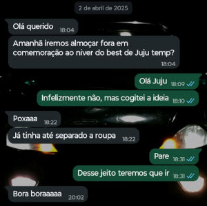
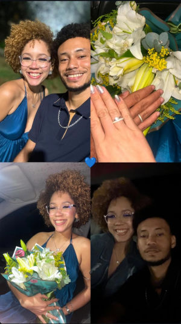

2024
Era final do mês de Novembro de 2024 quando eu vi você no roteiro. Eu entrei, sentei e olhei para você de cabelo rosa e pensei: "Certeza que essa ai é a novata, não tem ninguém na empresa com o mesmo corte e cor". Quem poderia imaginar que, mais de 1 ano depois, eu seria o maior fã desse cabelo e dessa mulher.
2025
Tentando entender em que momento começamos a conversar, fui procurar o inicio da nossa conversa e achei uma mensagem sua no dia 02/04/2025, um dia antes do meu aniversário:

Eu lembro desse dia, eu havia acabado de descer do roteiro e estava na padaria quando vi e respondi a sua mensagem. Nessa época você já era Juju Temp, e eu o seu Best.
Nesse mesmo ano aconteceram muitas coisas, mas MUITAS COISAS MESMO. E de uma hora pra outra, entre risos, conversas, conselhos, brincadeiras e acolhimento, a nossa amizade subiu na mesma velocidade de um foguete. Quando eu me dei conta, eu estava apaixonado por você.
Em certo ponto, a nossa amizade saiu de flores no campo para uma tempestade sem fim. Ambos não sabiam o que fazer, como continuar, o que tentar, só que não desistimos. Demorou muito, mas nos entendemos e nos perdoamos por tudo.
Por fim, 2025 foi um ano conturbado. 2026 estava vindo, e com ele, as boas coisas vieram no seu tempo.
2026
Pequenas coisas que aconteceram
- Seu presente de aniversário foi a ida ao cinema;
- Doces quando eu comprava;
- Sua flores com uma carta;
A virada de chave
Lembro até hoje do nosso primeiro beijo, de como eu estava nervoso naquela noite, e que você tomou a frente e me beijou. Ali começou a contagem regressiva pra o grande dia.
12/07/2026
A única coisa que eu tenho para dizer desse dia é:
